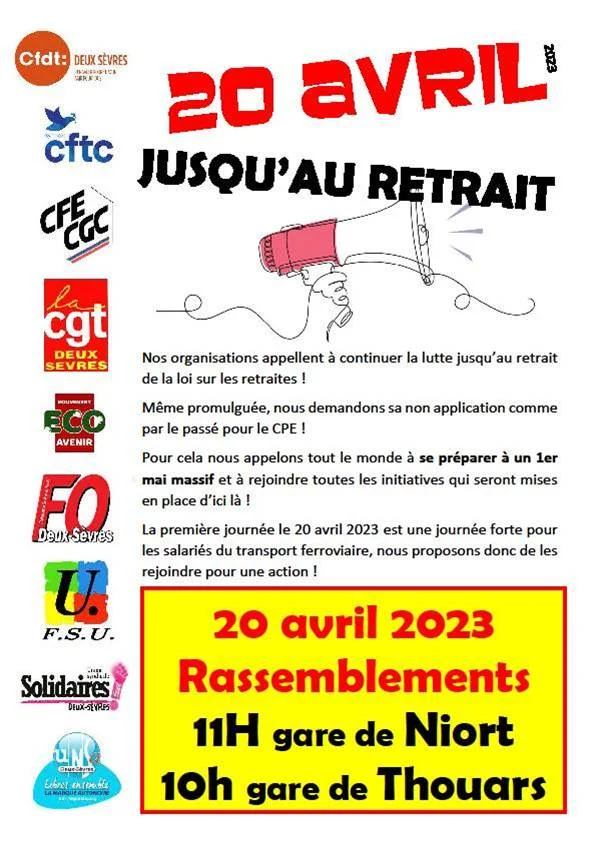

Publication d’archives
Loi Retraites : c'est toujours non !
Date indiquée par Facebook · 19 avril 2023
Texte conservé avec la publication
Contexte du dossier
Les syndicats demandent la non-application de la loi en rappelant le précédent du CPE. Le 20 avril, la colère cheminote devient une étape de préparation du 1er Mai : les rassemblements sont annoncés devant les gares de Niort et de Thouars, puis rapportés par les photos. La fédération conteste l’idée présidentielle de passer à autre chose. Le 30 avril, elle appelle à faire fleurir les luttes dans les quatre villes du département. Le lendemain, elle estime à environ 10 000 la mobilisation niortaise et décrit une journée unitaire prolongée par un pique-nique à Port Boinot. Une vidéo de Marc, partagée avec une mise à jour le 2 mai, conserve également la trace du 1er Mai à Bressuire.

Sources
Archive rouge · export Facebook · AR-0002-FB-01683
À lire aussi · 1er Mai